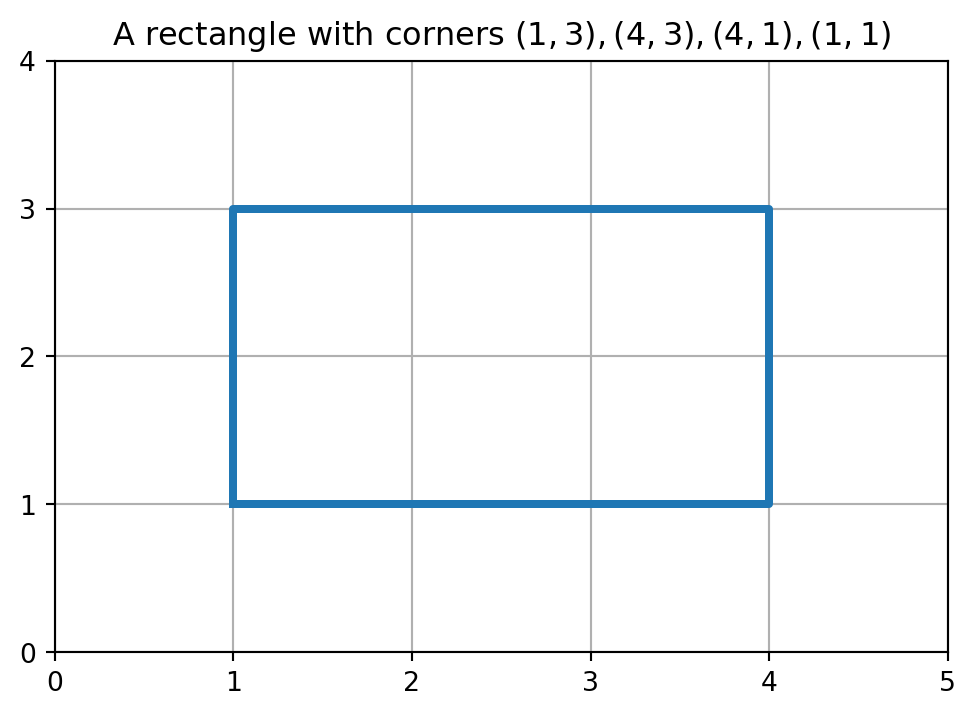
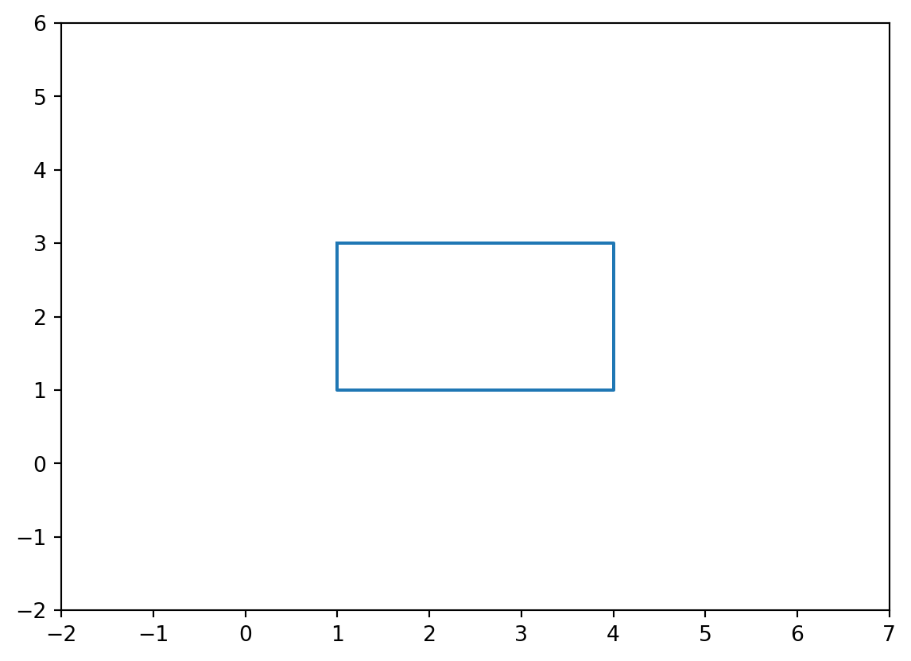

x = 1.42
print(type(x)) # x is an object from the class float<class 'float'>
Python is what is called an object oriented programming language. Almost everything in Python is an object on which, e.g., functions can be applied. Recall, for example, the Pandas data frames that we say in the last chapter: We could change elements in the frame, compute summary statistics of its columns, and modify its size.
Objects in Python are generated as instances of a class. Even something simple as a decimal number is an object from a class. To figure out what class an object is from, you can use the type() function.
x = 1.42
print(type(x)) # x is an object from the class float<class 'float'>To illustrate the concept of a class in more detail, we will create a class whose objects model students. The class could, for example, be used to keep track of the student administration at a school or university. You should think of a class as a blueprint: It describes the type of information we keep track of of every student, and how we can retrieve and manipulate it. The basic syntax for creating a class is given by class class_name:. For example if we want to create an (empty) class called Student we can do the following
class Student:
# Here the code to create and manipulate objects would be given
passThe pass command here is used because there is no further code in this class. You could use it as a kind of temporary place holder if you know you are going to create a class, but have not yet code to place into it.
In general, to create an object of a class we need to have some basic information of the object. For example, we can require that every student needs to have a name, age and student number. These pieces of information, needed to create an object of the class, are called attributes. We use a special function in Python called __init__(), that can be used to so-called initialize an object. For the student class with attributes name, age and student number (ID), this is done as follows.
class Student:
# This function initializes an object of the class Student
# by setting the attributes (name, age and ID) of an object.
def __init__(self,name,age,student_number):
self.name = name
self.age = age
self.ID = student_number In general, the __init__() function has a first input called self which you should think of as representing an empty object that we are going to fill with the student’s information. The other input arguments of __init__() are the inputs for the attributes of the student.
The attributes we set by doing self.attribute_name = attribute_input, where attribute_name is the name of the attribute (name, age and ID) here and attribute_input the input arguments of the function __init__() (name, age and student_number here).
Note that the variables we use for the input arguments of __init__() do not have to be the same as the names of the attributes themselves. For example, for the student number, we use the input argument student_number in __init__(), but we set this argument to be the ID attribute (when we do self.ID = student_number).
We next create an object (i.e., student) of the class with given inputs for the attributes.
# Creating an object (called stud) of the class Student
student1 = Student("Aidan",19,"2029912")
# Print attributes of the object
print("Name of student is", student1.name)
print("Age of student is", student1.age)
print("Student number of student is", student1.ID) Name of student is Aidan
Age of student is 19
Student number of student is 2029912The line student1 = Student("Aidan",19,"2029912") creates an object (or instance) of the Student class called student1. The input arguments of Student("Aidan",19,"2029912") are automatically passed to the (by every class required) __init__() function, that is, name = "Aidan", age=19, and student_number="2029912". You should think of student1 becoming the local variable self in the __init__() function.
It is also possible to, after an object has been created, change its attributes.
# Add last name of student as well
student1.name = "Aidan Amir"
print(student1.name)Aidan AmirIn a class we define, next to __init__(), additional functions that can be used to used to modify or obtain information of the student. Such function in a class are called methods. The __init__() function is also strictly speaking a method of the class.
As a first example, suppose we want to check if a student is of adult age (18 years or older). We can do this by adding the method adult() to the Student class. The first input of such an additional function always should be self. Next to that, there could also be additional arguments (we will give an example of this later).
Note that there is a difference between how we access attributes and how we apply methods: Attributes are accessed using object_name.attribute_name, but functions are applied with object_name.method_name(), i.e., with brackets () at the end.
class Student:
# This method initializes an object of the class Student
# by setting the attributes (name, age, and ID) of an object.
def __init__(self, name, age, student_number):
self.name = name
self.age = age
self.ID = student_number
def adult(self):
if self.age >= 18:
return print(self.name,"is an adult")
else:
return print(self.name,"is not an adult")# Create two Student objects
student1 = Student("Aidan",19,"2029912")
student2 = Student("Bella",17,"2034912")
# Check whether students are adults
student1.adult()
student2.adult()Aidan is an adult
Bella is not an adultWe also give an example of a method that takes additional input arguments (next to self). Suppose we have a list of student numbers that have registered for a course. We create a method reg_check that takes as input the list of student numbers and checks whether a student (i.e., object) has registered or not by inspecting whether or not the student number of the student is contained in the list.
class Student:
# This method initializes an object of the class Student
# by setting the attributes (name, age, and ID) of an object.
def __init__(self, name, age, student_number):
self.name = name
self.age = age
self.ID = student_number
def adult(self):
if self.age >= 18:
return print(self.name,"is an adult")
else:
return print(self.name,"is not an adult")
def reg_check(self,registrations):
for i in registrations:
if(i == self.ID):
return print(self.name, "is registered")
return print(self.name, "is not registered")student1 = Student("Aidan",19,"2029912")
course_A = ["2034757","2029912","2087645","2091234","2198765"]
course_B = ["2034757","2029915","2087645","2091234","2198765"]
# Aidan's student number is contained in list of course A
student1.reg_check(course_A)
# Aidan's student number is not contained in list of course B
student1.reg_check(course_B)Aidan is registered
Aidan is not registeredWe can also include more involved attributes in a class. For example, suppose that we want to be able to keep track of the courses that a student is taking part in. To achieve this, we create an extra attribute courses that is initialized as an empty list in __init__(). In addition to this, we define a method addCourse() that allows us to append a course to the courses list. We temporarily remove the methods age and reg_check to not make the code too long.
class Student:
# This method initializes an object of the class Student
# by setting the attributes (name, age, and ID) of an object.
def __init__(self, name, age, student_number):
self.name = name
self.age = age
self.ID = student_number
self.courses = []
def addCourse(self,course_name):
return self.courses.append(course_name)Note that the courses attribute is not obtained from an input argument of __init__(). This is because we define it to be an empty list.
student1 = Student("Aidan",19,"2029912")
# Initially the courses list is empty
print(student1.courses)
# Add course Programming
student1.addCourse("Programming")
print(student1.courses)
# Add course Linear Algebra
student1.addCourse("Linear Algebra")
print(student1.courses)[]
['Programming']
['Programming', 'Linear Algebra']Similarly, we can also define a method that can be used to delete a course. Deleting an element from a list can be done using the remove function, that is illustrated below.
x = ['Aidan','Bella','Charlie']
x.remove('Bella')
print(x)['Aidan', 'Charlie']Next, we give the class with the addition and deletion method for courses.
class Student:
# This method initializes an object of the class Student
# by setting the attributes (name, age, and ID) of an object.
def __init__(self, name, age, student_number):
self.name = name
self.age = age
self.ID = student_number
self.courses = []
# This method adds a course to the list courses
def addCourse(self,course_name):
return self.courses.append(course_name)
# This method deletes a course from the list courses
def delCourse(self,course_name):
return self.courses.remove(course_name)student1 = Student("Aidan",19,"2029912")
# Initially the courses list is empty
print(student1.courses)
# Add course Programming
student1.addCourse("Programming")
print(student1.courses)
# Add course Linear Algebra
student1.addCourse("Linear Algebra")
print(student1.courses)
# Delete course Programming
student1.delCourse("Programming")
print(student1.courses)[]
['Programming']
['Programming', 'Linear Algebra']
['Linear Algebra']To summarize, a class consists of an initialization method __init__() that is mandatory and used to initialize objects/instances of a class by setting the attributes of an object. Next to that, there can be other methods that either can be used to manipulate and/or to derive properties of an object.
We can summarize the aspects of the Student class as follows.
| class | Student |
|---|---|
| Attributes | name, age, student number, courses |
| Methods | initialization, check age, check registration |
| add course, delete course |
# Import packages here if needed
# ...
# Define class with all its methods here
class Student:
# This method initializes an object of the class Student
# by setting the attributes (name, age, and ID) of an object.
def __init__(self, name, age, student_number):
self.name = name
self.age = age
self.ID = student_number
self.courses = []
# This method check if student is >= 18
def adult(self):
if self.age >= 18:
return print(self.name,"is an adult")
else:
return print(self.name,"is not an adult")
# This method checks if ID is included in list registrations
def reg_check(self,registrations):
for i in registrations:
if(i == self.ID):
return print(self.name, "is registered")
return print(self.name, "is not registered")
# This method adds a course to the list courses
def addCourse(self,course_name):
return self.courses.append(course_name)
# This method deletes a course from the list courses
def delCourse(self,course_name):
return self.courses.remove(course_name)
# Put here code to initialize objects.
student1 = Student("Aidan",19,"2029912")
# Print attributes or test methods
# ...It is important to separate your testing code from the class. All the methods that form the class have to be indented under the class Student: line. Testing code should come afterwards (when the complete class has been defined).
Furthermore, you have to be aware of the difference in syntax between accessing an attribute of an object, or applying a method to it.
# Print attributes with object_name.attribute_name
# and NOT object_name.attribute_name()
print(student1.name) # Not print(student1.name())
# Apply method with object_name.method_name()
# and NOT object_name.method_name. The brackets () indicate
# that you are applying a method. Additional input arguments
# of the method are put in the brackets.
student1.adult()
# Note that for the line above we don't use the print() statement,
# because the adult() method itself returns a print() statement.Aidan
Aidan is an adultIn Python you can also build classes on top of each other, so that the new class inherit the attributes and methods of an old class. Suppose we start with a simple class Person, whose objects are people that have a name and age. There is also a method in this class that checks whether someone is an adult (18 years or older).
class Person:
# Initialize a person
def __init__(self, name, age):
self.name = name
self.age = age
# Check if person is an adult
def adult(self):
if(self.age >= 18):
return print(self.name, "is an adult")
else:
return print(self.name, "is not an adult")person1 = Person("Bella", 19)
# Check if Bella is an adult
person1.adult()Bella is an adultSuppose we now also want to create a class Student, where every student object has the attributes name, age and student number. We can do this by defining this class from scratch, but we can also make more clever use of the class Person that we already have created. Note that in terms of attributes, every student (having age, name and student number) can be seen as a special case of a person (having age and name), but not the other way around. In this case, we call Person the parent class and Student the child class.
It is possible to define the class Student so that it automatically inherits the attributes and methods of the class Person. To achieve this, we should put the parent class in brackets of the new child class that we want to define, so in our case we should define the Student class using class Student(Person). Let us do this with Python code as well, where we in addition also set the student number as attribute.
class Student(Person):
# Initialize a student
def __init__(self, name, age, student_number):
Person.__init__(self,name,age)
self.ID = student_numberThe class Student also needs an __init__() method, which takes as input all the attributes that we want to set (age, name and student number). Instead of using self.name = name and self.age = age to set the name and age of a student, we call the __init__() function from the Person class with the line Person.__init__(self,name,age) with arguments name and age.
You could, of course, argue that we might as well have typed self.name = name and self.age = age here, but you should imagine that objects in Python can have hundreds of attributes. If you are building classes on top of each other with this number of attributes, calling the initialization method from a parent class is much more efficient than setting all the attributes of an object from a child class explicitly again.
After having created an object from the class Person with the line Person.__init__(self,name,age), theryby setting the name and age of the student, we, in addition, set the student number with self.ID = student_number.
student1 = Student("Bella",19,"20143576")
print(student1.name, student1.age, student1.ID)Bella 19 20143576We can also check is the student is an adult by using the adult() method from the class Person. Because we defined the class Student to be the child of the parent class Person, we can use this method right away also on objects of the class Student.
# Check if Bella is an adult
student1.adult()Bella is an adultIn this section we will define a class whose objects are two-dimension rectangles in the two-dimensional plane \mathbb{R}^2, and we define some methods do derive properties from these rectangles. An example of a rectangle in \mathbb{R}^2, with corner points (1,3), (4,3), (4,1), (1,1) is given below.
import numpy as np
import matplotlib.pyplot as plt
# Define the x range
x_coord = [1,4,4,1,1]
y_coord = [1,1,3,3,1]
# Create the plot
plt.figure(figsize=(6, 4))
plt.plot(x_coord, y_coord,linewidth=3)
# Add labels and title
plt.title('A rectangle with corners $(1,3), (4,3), (4,1), (1,1)$')
# Add a grid
plt.grid(True)
# Set range
plt.xlim(0,5)
plt.ylim(0,4)
# Set ticks
plt.xticks([0,1,2,3,4,5])
plt.yticks([0,1,2,3,4])
# Show plot
plt.show()
To keep things simple, we assume that the rectangles never appear at an angle, but always with the horizontal and vertical sides parallel to the horizontal and vertical axis, respectively.
We should first think about how we want to represent a rectangle in Python, i.e., what will the attributes of a rectangle object of the class be? There are many possibilities here, for example, we could explicitly choose four corner points, that together form the rectangle, as its attributes. This would require eight input numbers: four x-coordinates and four y-coordinates.
A more efficient way of doing this is to store the coordinates of the upper-left corner point, the height, and the width of the rectangle (only four input numbers). In the example above the upper-left corner point is (4,1), the height of the rectangle is 2, and the width is 3. Note that this information is enough to derive the locations of the other corner points, i.e., (4+\text{width},1), (4,1-\text{height}), (4 + \text{width},1 - \text{height}).
class Rectangle:
# Here corner is the upper-left corner point which
# should be a list containing the x- and y-coordinate.
def __init__(self, corner, height, width):
self.corner= corner
self.height = height
self.width = widthNote that we assume that the upper left corner is given in a list whose first entry is the x-coordinate of the upper left corner, and whose second entry is the y-coordinate. This is merely a modeling choice; we could also have defined two separate attributes for the x- and y-coordinate.
rectangle1 = Rectangle([1,3],2,3)
# Print upper left corner of the rectangle
print(rectangle1.corner)[1, 3]We will next define three methods that can be used to compute explicitly the corner points of the rectangle, its area and its circumference.
Let us start with the area (width times height) and circumference (two times width plus two times height) of the rectangle. Note that these are relatively straightforward to compute these given that the width and height of a rectangle object are two of its attributes.
class Rectangle:
# Here corner is the upper-left corner point which
# should be a list containing the x- and y-coordinate.
def __init__(self, corner, height, width):
self.corner= corner
self.height = height
self.width = width
# Compute area
def area(self):
return self.width*self.height
# Compute circumference
def circumference(self):
return 2*self.width + 2*self.heightrectangle1 = Rectangle([1,3],2,3)
# Compute and print list of corner points of the rectangle
area1 = rectangle1.area()
circumference1 = rectangle1.circumference()
print("The area of the rectange is", area1)
print("The circumference of the rectange is", circumference1)The area of the rectange is 6
The circumference of the rectange is 10We continue with the corner points method corners(); we leave out the area and circumference method from the code to keep the code snippet short.
If we know that the left upper corner point is located at [x,y] then the upper-right corner is [x + \text{width},y], the lower-right corner [x + \text{width},y - \text{height}], and the lower-left corner [x,y - \text{height}]. We will write a method that returns these points, including the upper-left corner, in a list (restulting in a list of lists as all the corner points themselves will be lists of two elements).
class Rectangle:
# Here corner is the upper-left corner point which
# should be a list containing the x- and y-coordinate.
def __init__(self, corner, height, width):
self.corner= corner
self.height = height
self.width = width
# Compute corner points: the output has the points in the
# order [upper-left, upper-right, lower-right, lower-left]
def corners(self):
up_right = [self.corner[0] + self.width, self.corner[1]]
low_right=[self.corner[0]+self.width,self.corner[1]-self.height]
low_left = [self.corner[0], self.corner[1] - self.height]
return [self.corner, up_right, low_right, low_left]rectangle1 = Rectangle([1,3],2,3)
# Compute and print list of corner points of the rectangle
corners1 = rectangle1.corners()
print(corners1)[[1, 3], [4, 3], [4, 1], [1, 1]]We conclude this section with a method that can be used to plot a rectangle in a two-dimension plane, like the figure given at the beginning of this section. For the plotting method, we also make use of the method to determine the corner points, so this is included in the class below as well. The following code will be explained below.
import matplotlib.pyplot as plt
class Rectangle:
# Here corner is the upper-left corner point which
# should be a list containing the x- and y-coordinate.
def __init__(self, corner, height, width):
self.corner= corner
self.height = height
self.width = width
# Compute corner points: the output has the points in the
# order [upper-left, upper-right, lower-right, lower-left]
def corners(self):
up_right = [self.corner[0] + self.width, self.corner[1]]
low_right=[self.corner[0]+self.width,self.corner[1]-self.height]
low_left = [self.corner[0], self.corner[1] - self.height]
return [self.corner, up_right, low_right, low_left]
# Plot the rectangle
def plotting(self):
plt.figure()
# Obtain corner points of the rectangle using corners()
c = self.corners()
# Define two lists: x-coordinates and y-coordinates
x_coord = [c[0][0],c[1][0],c[2][0],c[3][0],c[0][0]]
y_coord = [c[0][1],c[1][1],c[2][1],c[3][1],c[0][1]]
# Define ranges (margin of 3 around the rectangle)
plt.xlim(self.corner[0]-3,self.corner[0] + self.width + 3)
plt.ylim(self.corner[1]- self.height - 3,self.corner[1] + 3)
# Create the plot
plt.plot(x_coord, y_coord)
returnrectangle1 = Rectangle([1,3],2,3)
# Corner points of the rectangle
corners1 = rectangle1.corners()
print(corners1)
# Plot the rectangle
rectangle1.plotting()[[1, 3], [4, 3], [4, 1], [1, 1]]
To be able to plot, we first import the matplotlib.pyplot package under the usual alias plt. We then define the class Rectangle, whose __init__() and corners methods are the same as before.
We continue with explaining the plotting() method. The method first creates an empty figure using plt.figure() and determines the corner points of the rectangle using the corners() method. They are stored stored in the variable c. Because c is a list of lists, we can access the x-coordinate of the i-th corner point in the list with c[i][0], and the y-coordinate with c[i][1].
Recall that the plot() function plots two lists/arrays x = [x_1,\dots,x_n] and y = [y_1,\dots,y_n] against each other by plotting the points (x_i,y_i) and then connecting them with line segments. To plot a rectangle, we therefore define
x = [x_{\text{upper-left}},x_{\text{upper-right}},x_{\text{lower-right}},x_{\text{lower-left}},x_{\text{upper-left}}]
in the list x_coord and
y = [y_{\text{upper-left}},y_{\text{upper-right}},y_{\text{lower-right}},y_{\text{lower-left}},y_{\text{upper-left}}].
in the list y_coord.
Note that the command plt.plot(x_coord,y_coord) first draws the point (x_{\text{upper-left}},y_{\text{upper-left}}), then (x_{\text{upper-right}},y_{\text{upper-right}}), etc. and connects them. It is important that we include the upper-left point at the end again so that the left vertical side of the rectangle is drawn as well.
Finally, we also set the range of the horizontal and vertical axis with the xlim() and ylim() functions. We include a margin of 3 around the box. To see how this works for the horizontal axis, note that self.corner[0] contains the x-coordinate of the upper-left point, and self.corner[0] + width that of the upper-right point. Therefore, to create a margin of 3 on both sides of the rectangle, we let the hortizontal axis range from self.corner[0] - 3 to self.corner[0] + width + 3.
The complete class of the previous subsections, containing all the methods that we set up, is given below.
import matplotlib.pyplot as plt
class Rectangle:
# Here corner is the upper-left corner point which
# should be a list containing the x- and y-coordinate.
def __init__(self, corner, height, width):
self.corner= corner
self.height = height
self.width = width
# Compute area
def area(self):
return self.width*self.height
# Compute circumference
def circumference(self):
return 2*self.width + 2*self.height
# Compute corner points: the output has the points in the
# order [upper-left, upper-right, lower-right, lower-left]
def corners(self):
up_right = [self.corner[0] + self.width, self.corner[1]]
low_right=[self.corner[0]+self.width,self.corner[1]-self.height]
low_left = [self.corner[0], self.corner[1] - self.height]
return [self.corner, up_right, low_right, low_left]
# Plot the rectangle
def plotting(self):
plt.figure()
# Obtain corner points of the rectangle using corners()
c = self.corners()
# Define two lists: x-coordinates and y-coordinates
x_coord = [c[0][0],c[1][0],c[2][0],c[3][0],c[0][0]]
y_coord = [c[0][1],c[1][1],c[2][1],c[3][1],c[0][1]]
# Define ranges (margin of 3 around the rectangle)
plt.xlim(self.corner[0]-3,self.corner[0] + self.width + 3)
plt.ylim(self.corner[1]- self.height - 3,self.corner[1] + 3)
# Create the plot
plt.plot(x_coord, y_coord)
return